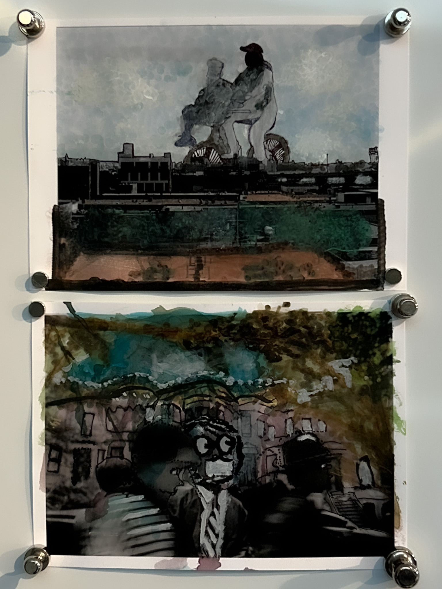
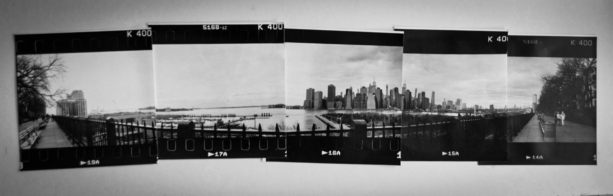

Nora Mahler
Photography



"I can't put into words what I'm trying to say." Most of us have said this and felt the frustration of struggling to put our thoughts into comprehensible words at least once in our lives. This phrase most accurately captures the frustration of grappling with the gap between a clear thought existing in our minds and the words we use.
Language is our primary tool for connecting our minds to the world, but it also limits the accuracy of what we can express. Our brains, bodies, and perception are present long before words come into play; they shape our experiences in ways that can't always be reproduced verbally. Language is all we have to mediate our brains and the world around us; it's what we use to connect to reality, but it also limits our ability to be accurately understood. Translating complex thoughts into words is akin to writing musical notes as a paragraph in English; the tools capture different kinds of meaning. We value language for its ability to transform personal experiences into universal ones, but in reality, its capacity to do so is severely limited.
In the digital age, the pressure to make our inner lives legible, to turn every thought into something to be consumed, viable for communication, or limpid language, feels even stronger. The moment our inner lives become shareable or consumable, they become vulnerable to others' opinions and subject to change based on what viewers take from them.
It was when I first began experimental darkroom photography that I remember making my first print by manipulating multiple negatives in the enlargers – the first time I had ever successfully translated an image from my imagination into something tangible. There was a sense of relief, because what I had never believed possible, bringing something from my imagination to life, suddenly became feasible. Before this experience, I was content knowing that everything that goes on in my mind, images, thoughts, ideas, opinions, did not need to be proved essential or interesting to anybody, mainly because it couldn't be. However, once it became possible for me to translate at least some of what transpired in my brain, the significance of my work, and coincidentally my imagination, was suddenly placed in the hands of the viewer.
So is the key to a life of expression forming a path that aligns with how you think, or is it the ability to live contentedly and confidently in the significance of our imaginations without needing them to be consumable?
I want any viewer of my work to be reminded that inner experience will always be richer, stranger, and more personal than anything to be consumed.
Contact: noradmahler@gmail.com